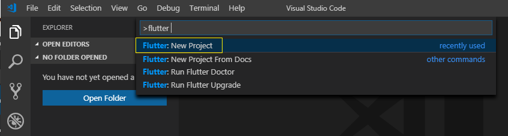
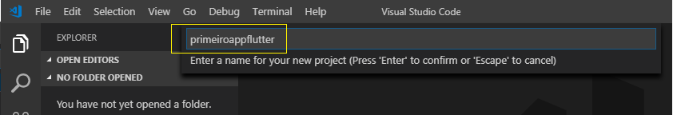
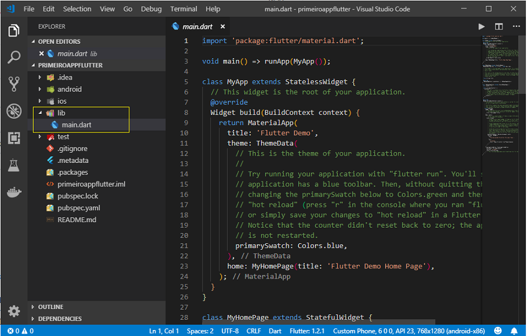
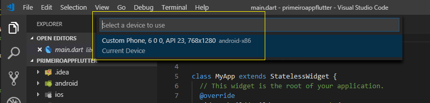
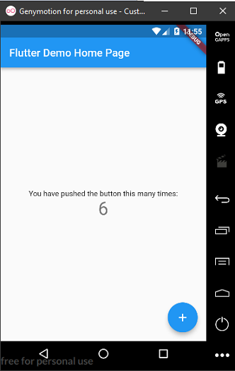

Instalação do Flutter
● A instalação do Flutter é muito simples. Basta acessar o site:
https://flutter.dev/docs/get-started/install, escolher o sistema operacional, e, baixar
e descompactar o pacote em uma pasta na sua máquina local.
● Nessa apresentação iremos utilizar o Windows 10.
Requistos minímos
Os requisitos mínimos exigidos são:
● Sistemas operacionais: Windows 7 SP1 ou posterior (64 bits)
Espaço em disco: 400 MB (não inclui espaço em disco para IDE / ferramentas).
Ferramentas: O Flutter depende dessas ferramentas estarem disponíveis em seu ambiente.
1- Windows PowerShell 5.0 ou mais recente (isso é pré-instalado com o Windows 10)
2- Git para Windows 2.x - para executar comandos git;
Passo a Passo
1- A seguir baixe o SDK Flutter mais atual. Em abril de 2019 a versão atual é a: 3.10.5
2- Extraia o arquivo zip que você acabou de baixar em uma pasta na sua máquina local (Evite
instalar na pasta Arquivos de Programas). Eu criei um pasta c:\flutter e descompactei o pacote nesta
pasta.
3- Localize o arquivo flutter_console.bat dentro do diretório flutter e inicie-o clicando
duas
vezes
nele. Será aberta uma janela de comandos onde você poderá emitir comandos Flutter.
Obs: É importante atualizar o PATH do seu ambiente para poder emitir comandos no prompt
de
comandos
(cmd). Para
isso basta incluir o caminho onde você instalou o Flutter e a pasta bin na variável de ambiente PATH.
No meu desktop ficou assim: c:\flutter\bin. (Faça isso em Painel de Controle -> Sistema -> Editar
variáveis de ambiente do sistema)
-
Verificando o Ambiente
● Agora que você configurou a variável de ambiente, vamos verificar se tudo está funcionando bem, e,
se o comando flutter é reconhecido pelo prompt de comando.
● Abra uma janela de prompt de comandos e digite o comando "flutter doctor" e pressione enter.
● Você vai ver um relatório completo da instalação do SDK do flutter na sua máquina indicando o que
pode estar faltando.
● O DART SDK (DART é a linguagem de programação oficial para flutter) é fornecido com o flutter e
você
não precisa instalá-lo separadamente.
● Você vai precisar ter no seu ambiente o SDK do Android instalado. Isso é obrigatório.
OBS: É possível usar o Android Studio como editor. Iremos usar o Visual Studio Code e por
isso não utilizaremos essa ferramenta.
-
Configurando o Ambiente
● Para poder usar o Visual Studio Code com o Flutter você tem que instalar o plugin Flutter no VS
Code:
● Outro requisito é possuir um dispositivo Android ou iOS para testar. Recomendamos o Genymotion
mas você pode baixar um dispositivo Android a seu gosto.
Assim, com o Flutter instalado e tendo o Visual Studio Code e o Genymotion instalados, estamos
prontos
para usar o Flutter.
Nota: Baixe o Visual Studio Code aqui: https://code.visualstudio.com/download
Baixe o Genymotion aqui : https://www.genymotion.com/ (crie uma conta e baixe a versão
personal)
-
Criando um Aplicativo
● Abra o Visual Studio Code e a seguir abra a paleta de comandos teclando CTRL+SHIFT+P;
A seguir digite flutter para ver os comandos disponíveis e clique em new Project;

● Informe o nome do projeto (tem que usar somente minúsculas) que deseja criar e tecle Enter:

● A seguir selecione uma pasta onde o projeto vai ser criado.
Após alguns instantes você verá o projeto sendo criado e exibido no VS Code na pasta indicada:

● Na pasta lib do projeto esta o arquivo main.dart onde esta o código do projeto.
● Para executar o projeto basta pressionar F5 , ou se quiser executar o projeto na linha de comando,
abra um terminal
de comandos e posicione-se na pasta raiz do projeto que deseja executar e digite o
comando:
flutter run -d all
● Antes de executar é bom verificar se você tem um dispositivo pronto para ser usado.
● Abra a paleta de comandos e digite : Flutter e a seguir a opção Select a device;
● Será aberta uma janela exibindo os dispositivos android disponíveis. Basta selecionar o desejado.

● A seguir pressione F5 para executar e após alguns segundos...

Seu primeiro aplicativo Flutter criado